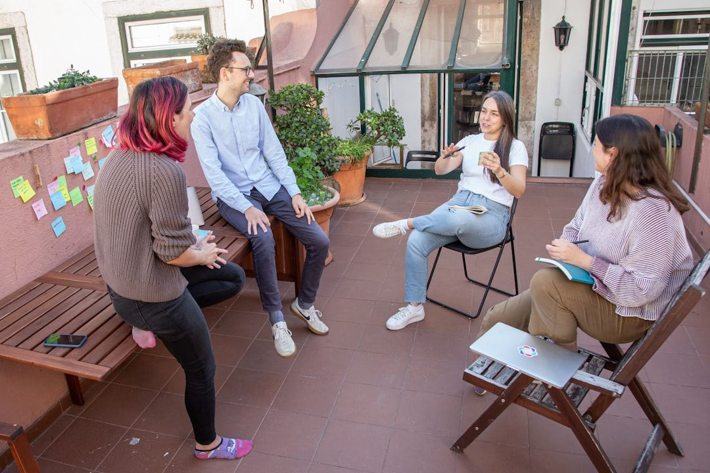

Zašto je reprezentiranje u konstelacijama najbolje što možeš učiniti za sebe

Osim postavljanja vlastite konstelacije, možeš sudjelovati i u tuđim radovima. Reprezentiranje u sistemskim konstelacijama jedna je od najboljih stvari koju možeš učiniti za sebe i svoj osobni rast. Iako formalno ne radiš na vlastitom pitanju, sudjelovanje u tuđim radovima nosi brojne benefite kroz koje se događa neočekivano iscjeljenje i osobni pomak.
Psihološko–emocionalni benefiti
Reprezentiranje u tuđim radovima pruža snažnu priliku za emocionalno rasterećenje i osobni razvoj. Tijekom procesa često se pojave emocije koje su bile potisnute ili nedovoljno prepoznate, pa reprezentant doživljava olakšanje i smanjenje unutarnje napetosti. Uloga omogućava razvoj i produbljivanje empatije kroz sposobnost da se na trenutak uđe u perspektivu nekog drugog, bez osuđivanja i prosudbi. Time se širi kapacitet suosjećanja, ali i vlastita samorefleksija, jer u tuđim pričama često prepoznajemo obrasce koji postoje i u našem životu. Sam proces donosi osjećaj pripadnosti i povezanosti s drugima, što jača unutarnju stabilnost i povjerenje u život.
Tjelesni benefiti
Konstelacije se ne odvijaju samo na mentalnoj i emocionalnoj razini, već i na tjelesnoj. Tijekom sudjelovanja tijelo spontano reagira i oslobađa se napetosti, što dovodi do osjećaja olakšanja i protočnosti vlastite energije. Time se povećava svjesnost o signalima koje tijelo šalje, počinjemo obraćati pažnju i učimo ga slušati dok razvijamo dublju povezanost s vlastitom fizičkom prisutnošću. Kroz otpuštanje zakočene energije iz tijela dolazi do umirenja živčanog sustava, usklađuje se ritam disanja, otpušta se napetost u mišićima i smanjuje se razina stresa. Takvi procesi tijelu donose osjećaj stabilnosti i olakšanja, a do njih dolazi čak i kad tema nije njihova osobna.
Socijalni benefiti
Sudjelovanje na grupnim konstelacijama razvija važne socijalne vještine i otvara prostor za autentičan kontakt s drugima. Reprezentant uči slušati bez predrasuda i osude, uči opažati i doživljavati ljude u njihovoj cjelovitosti, što olakšava komunikaciju u svim aspektima svakodnevnog života. Takvo iskustvo stvara osjećaj zajedništva i pripadnosti grupi u kojoj vlada povjerenje i sigurnost. Osoba ima priliku biti viđena i prihvaćena takva kakva jest, što podiže i osnažuje kvalitetu odnosa sa samim sobom, kao i s drugima. Grupna dinamika često donosi osjećaj podrške i solidarnosti, koji se rijetko susreće u svakodnevnom životu.
Duhovno–razvojni benefiti
Uloga reprezentanta omogućuje dublje razumijevanje povezanosti među ljudima, i odnosa u sistemima kojima pripadamo. Ovo iskustvo donosi širenje svijesti i osjećaj da nismo izolirani pojedinci već pripadamo određenom sustavu u kojem imamo svoje mjesto koje nam pripada začećem i osvještavamo snažnu liniju predaka od kojih nam dolaze resursi za život.
Ulogom se također razvija intuicija i jača povjerenje u unutarnje vodstvo, jer reprezentant uči prepoznavati i slijediti impulse tijela i emocija koji se pojavljuju bez racionalnog objašnjenja. Takvi trenuci donose osjećaj smisla, pripadnosti i zahvalnosti za život i svoje mjesto u obiteljskom sistemu. Iako se radi o procesu koji pripada nekom drugom, uvidi koje reprezentant doživi često duboko rezoniraju s njegovim vlastitim životnim pitanjima i izazovima.
Terapeutski benefiti
Iako reprezentant ne postavlja svoju konstelaciju nego sudjeluje u tuđoj, vrlo često doživi vlastite pomake i uvide. Kroz tuđi proces pojavljuju se sekundarna iscjeljenja jer ono što se razrješava u konstelaciji često dotakne i vlastite nesvjesne teme. Na taj način reprezentant može doći do uvida koje svjesnim razmišljanjem ili razgovorom možda ne bi mogao dosegnuti. Takva iskustva omogućuju integraciju nesvjesnog, prepoznavanje unutarnjih blokada i njihovo otpuštanje. Terapeutski učinak često se nastavlja i nakon same konstelacije, kroz postupno usklađivanje emocija, misli i odnosa u svakodnevnom životu.